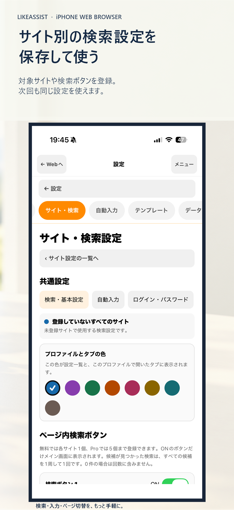
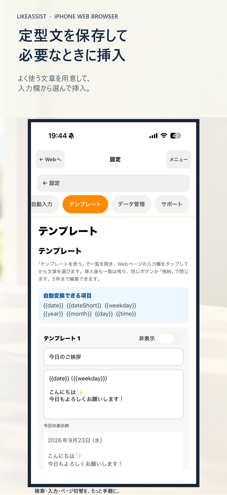
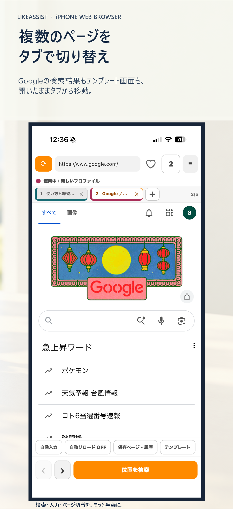

「イイネ」ボタン、どこ？
ページを開いて、押したいリンクを探す。見つからないと、また上からスクロール。毎回これ。
帰ったらヘトヘトなのに、いいねの場所を探して、
同じ挨拶をまた手打ちして、ページを何度も行ったり来たり。
LikeAssistは、そんな毎日の操作の手間だけをアシストします。
※ 自動でいいねを押したり、投稿や送信をしたりはしません。ページと内容を自分で確認して操作します。
毎日の"いいね周り"で
ひとつずつは小さなこと。でも、繰り返すと地味にしんどい。
ページを開いて、押したいリンクを探す。見つからないと、また上からスクロール。毎回これ。
「ブログ見ました♡」「応援してます！」…毎回打つのめんどくさいけど、手を抜けない。
ブログ→一覧→ブログ…行き来してるうちに、どこまでやったか分からなくなる。
がんばるあなたの、小さな味方。
自動化アプリじゃない。
iPhoneのブラウザで、探す・入力する・ページを切り替える操作をお手伝いするアシストブラウザ。
操作内容を自分で確認し、自分で進められます。
✦ LikeAssistでできること
LikeAssistはWebページを見るiPhone向けブラウザ。
探す・入力・切替の操作を補助します。
探したい言葉を登録しておけば、ページ内のボタンやリンクをパッと見つけて移動。長いページをスクロールして探し回る手間が減ります。

「ブログ見ました♡」「応援してます！」よく使う文章をテンプレートに保存。使うときに選んで入力欄へ挿入し、内容を確認してから送信。

ブログと一覧ページを、タブを選んで移動。ページを閉じて開き直す回数を減らせます。どこまでやったか分からなくなる問題も軽減。

自動ツールに不安がある方にこそ知ってほしい。
| ✦ LikeAssist | 自動化ツールの例 | |
|---|---|---|
| いいね操作 | 自分で確認して押す | 自動で押す |
| 文章の送信 | 挿入後、自分で送信 | 自動送信 |
| ページ巡回 | タブで手動切替 | 自動巡回 |
| 最終操作 | 自分で内容を確認 | ツールにより異なる |
| 操作方法 | 画面を見て自分で操作 | ツールにより異なる |
※ 比較は一般的な機能の例です。自動化ツールの仕組みは製品ごとに異なります。LikeAssistは自動でいいねを押したり、ページを巡回したり、文章を送信したりしません。利用するサイトのルールをご確認ください。
※ 以下は機能から想定した利用シーンです。実際の利用者の声・体験談・効果を示すものではありません。
いいねボタンを探す手間を減らし、必要なページを自分で確認しながら操作したい場面に。
よく使う文章をテンプレートに用意しておき、必要なときに選んで挿入する使い方。
タブを使ってページを切り替え、見ていたページを開き直す回数を抑えたい場面に。
自動で送信・いいねを行わず、画面と内容を見てから自分で操作したい人向けの設計です。
「LikeAssist」で検索、または下のボタンからダウンロード。
設定画面で「イイネ」「いいね」など、ページ内で探したいボタン名を登録。
挨拶やお礼など、繰り返し使う文章をテンプレートに保存しておく。
LikeAssistでページを開けば、登録した検索やテンプレートがすぐ使えます。
サンプルJSONを読み込むと、「イイネを探す」設定をLikeAssistに追加できます。ログイン情報や自動入力の内容は含まれません。
「設定」→「サイト・検索設定」→「サイト設定を共有・読み込み」へ進みます。
下のURLをコピーして入力欄に貼り、「URLから読み込む」を押します。
対象が「pokepara.jp」、検索語が「イイネ／いいね」になっていることを確認して、「確認して保存」を押します。
ポケパラのページを開き、登録された「イイネを探す」ボタンを使います。ページを開く・ボタンを押す操作はご自身で行ってください。
がんばる時間を、もっと自分に。
機能や利用条件をApp Storeで確認できます。